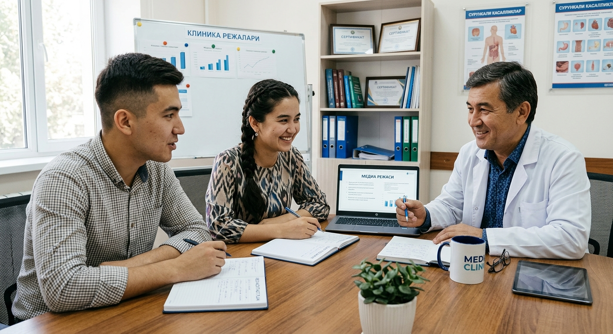
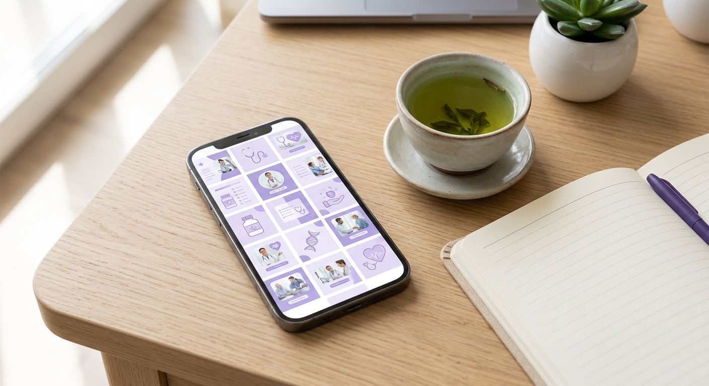

«Посты выходят, но никто не записывается».
Посты есть, но в них нет ответа на вопрос пациента и следующего шага.
Перед записью на приём пациент смотрит ваш Instagram. Не нашёл нужного ответа — выбрал другую клинику. Мы анализируем вашу страницу и готовим посты, видео и веб-страницу, которые закрывают эти пробелы.
Такое встречается во многих клиниках. Если хотя бы один пункт про вас — страница теряет пациентов.
Посты есть, но в них нет ответа на вопрос пациента и следующего шага.
На странице не показано, кто врач, какой у него опыт и что он лечит.
Основной информации на странице нет. А те, кто не спросил, просто уходят.
Реклама приводит человека, а доверие должна вызвать сама страница.
Мы — Tizimmedia. Когда посты, реклама и веб-страница делаются по отдельности, они не связаны между собой. Поэтому мы готовим всё по единому плану.
Знакомят с вашими врачами и услугами, отвечают на вопросы пациентов.
Услуги, врачи, адрес и способ связи — в одном месте.
Темы, сроки и порядок согласования определяем с самого начала.
Для текстов и идей используем искусственный интеллект. Перед публикацией всё подтверждает специалист вашей клиники.
Предлагаем контент не наугад, а по результатам анализа вашей страницы.

Знакомимся с клиникой и смотрим, чего не хватает на вашей странице в Instagram.
БЕСЕДА · АНАЛИЗПо итогам анализа предлагаем темы постов и видео, подходящие вашей клинике.
ИДЕЯ · ПЛАНГотовим согласованный материал. Медицинскую информацию просматривает ваш специалист.
ПОДГОТОВКА · ПРОВЕРКАОснователи Tizimmedia — Нурали и Малика. С каждой клиникой работаем лично.
Системному подходу к работе мы учились в Центре систематизации бизнеса (BTM). Наши наставники — Ахролходжа Рахматходжаев, Нурали Садиков и Дилшод Хамраев.
Ниже — темы, выбранные для примера. Точное содержание согласуем со специалистом клиники.

Короткий ответ на вопрос, который пациенты задают чаще всего.
Простое объяснение рекомендаций, подтверждённых врачом.
Знакомство с адресом, кабинетами и командой.
За 5 рабочих дней подготовим 3 поста и 2 сценария видео под вашу клинику. Бесплатные примеры делаем только для 3 клиник в месяц.
готовых примеров под вашу клинику
Объём и стоимость согласуем после разговора с вашей клиникой.
Заранее планируем, на какую тему и какой пост готовить.
Готовим материалы о врачах и услугах клиники.
Услуги, врачи, адрес и способ связи — в одном месте.
Количество тем в месяц — 15–20. Число видео и каруселей согласуем с вами отдельно. Стоимость тоже зависит от объёма работы.
Короткие ответы о предложении.
Знакомимся с клиникой и за 5 рабочих дней готовим 3 поста и 2 сценария видео на согласованные темы. Бесплатные примеры делаем только для 3 клиник в месяц.
Нет. Вы смотрите примеры. Продолжать или остановиться — решаете вы.
Искусственный интеллект помогает с идеями и текстом. Медицинскую информацию проверяет и подтверждает специалист вашей клиники.
Нет. Можно выбрать видео с участием врача или только с клиникой и услугами.
Сначала знакомимся с клиникой и согласуем нужные работы, после этого называем стоимость и сроки.
Оставьте имя и направление клиники. Договоримся, как подготовить бесплатные примеры.